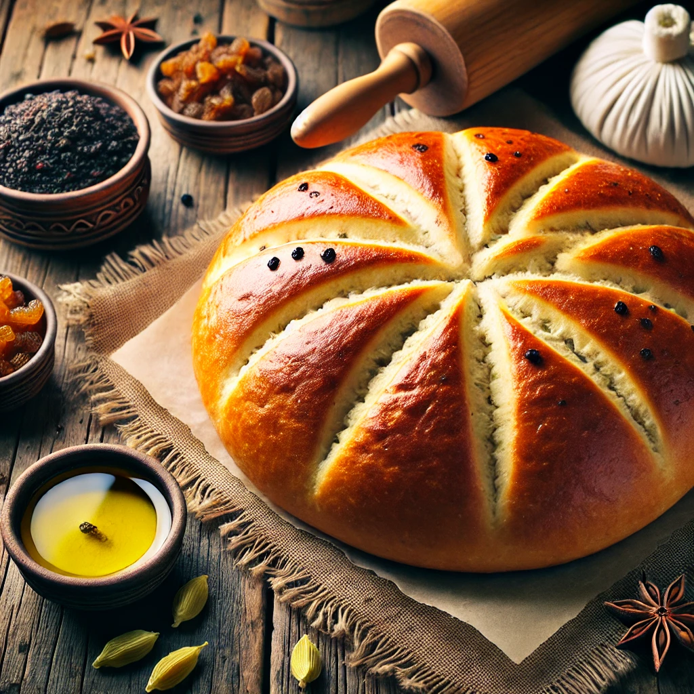

Ethoian Food Recipe
Please have fun cook with me
Ambasha recipe

Ingerediant
For the Dough
- All-purpose flour - 2 cups
- Instant yeast - 1 tsp
- Salt - 1/2 tbsp
- Olive oil - 2 tablespoons
- Warm water - 1/2 cup to 3/4 cup
- Raisins - 1/4 cup
- Black sesame seeds - 1 tsp
- Cardamom powder - 1 tsp
- Sugar - 3 tbsp
- Milk - 3 tablespoons (for brushing on top, optional)
Instructions
- In a large mixing bowl, combine the all-purpose flour, instant yeast, salt, cardamom powder, and sugar.
- Add the olive oil and mix it into the dry ingredients until it is well incorporated.
- Gradually add the warm water, a little at a time, and knead the dough until it is smooth and elastic. You may not need to use all the water, so add it slowly.
- Once the dough is formed, add the raisins and black sesame seeds, and knead them into the dough until evenly distributed.
- Shape the dough into a ball and place it in a lightly oiled bowl. Cover it with a clean cloth and let it rise in a warm place for about 1-2 hours, or until it has doubled in size.
- Preheat your oven to 350°F (175°C).
- After the dough has risen, punch it down to release the air. Transfer the dough to a lightly floured surface and shape it into a round loaf.
- Place the shaped dough onto a baking sheet lined with parchment paper. If desired, brush the top of the dough with milk to give it a nice golden color when baked.
- Use a sharp knife to score the top of the dough with a cross or any pattern you like. This will allow the bread to expand while baking.
- Bake in the preheated oven for 25-30 minutes, or until the bread is golden brown and sounds hollow when tapped on the bottom.
- Remove from the oven and let it cool on a wire rack before slicing and serving.